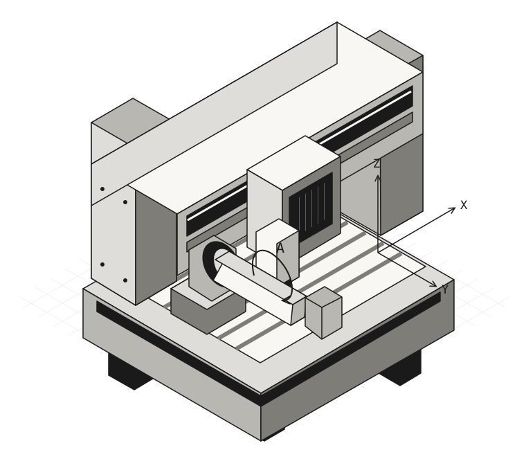
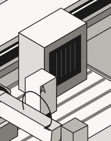

ОСНОВА 6040 А
Четырёхосевой фрезерный станок 6040 А
Три линейные оси ведут фрезу, четвёртая поворачивает заготовку. Такая схема нужна для деревянных рукоятей, рельефов и деталей, которые приходится обрабатывать с нескольких сторон.
Демо-магазин: корзина работает, оплата не подключена.

Применение
Обработка детали с нескольких сторон
На трёхосевом станке всё понятно, пока доступ к детали нужен только сверху. Для следующей стороны заготовку приходится снимать, поворачивать и заново выставлять.
Каждая перестановка требует времени и новой привязки. Поворотная ось позволяет развернуть закреплённую заготовку к инструменту. Но она не отменяет настройку: держатель, вылет фрезы и управляющая программа по-прежнему должны подходить к детали.
Как проверить станок перед покупкой
По красивому корпусу станок не выбрать. Поэтому в этой концепции мы начинаем с рабочего поля, крепления заготовки и шпинделя. Перед покупкой нужно проверить обработку вашей детали — по её чертежу и материалу.
Попросите обработать пробную деталь из вашего материала.Основные узлы
Устройство станка
Выберите узел, чтобы рассмотреть его. Размеры ниже — образец наполнения.

Пример конфигурации / 1,5 кВт · ER11
Шпиндель и крепление фрезы
В образце конфигурации — шпиндель 1,5 кВт с жидкостным охлаждением и цангой ER11. Диаметр хвостовика подбирают под конкретную цангу; маркировка ER11 сама по себе не означает, что в комплекте есть все размеры.
Перед заказом: уточните диапазон оборотов, биение и состав системы охлаждения.
Размеры и комплектация
Технические характеристики
Это демонстрационные данные для макета, а не паспорт серийного станка.
| Рабочее поле X × Y × Z | 600 × 400 × 120 мм |
|---|---|
| Габариты станка | 900 × 750 × 680 мм |
| Масса без упаковки | 78 кг |
| Конструкция | Алюминиевый стол с Т-пазами, стальные линейные направляющие |
| Шпиндель | 1,5 кВт · жидкостное охлаждение · ER11 |
| Поворотный узел | Ось А · трёхкулачковый патрон Ø 80 мм с задней бабкой |
| Питание | 220 В · 50 Гц, заземление обязательно |
| Базовый комплект | Станок, блок управления, поворотный узел, задняя бабка, кабели, инструкция |
| Набор оснастки | Цанги 3, 4 и 6 мм; 3 фрезы Только в расширенной комплектации |
| Уход | Удалять стружку при выключенном питании. Смазка направляющих — по паспорту модели. |
| Перед запуском | Уточнить контроллер, ПО, защиту зоны резания, аспирацию и требования к размещению. |
Рабочее поле не равно допустимому размеру детали на поворотной оси. Учитывайте патрон, заднюю бабку, инструмент и свободное пространство для вращения.
Чертёж и небольшой пробный рез скажут о станке больше, чем длинный список обещаний.
Что уточнить перед покупкойПеред покупкой
Доставка, гарантия и совместимость
Что уточнить у поставщика до оплаты.
01Сколько ждать доставку?
Для этой демонстрационной модели срок не установлен. В реальном заказе поставщик должен подтвердить наличие, время подготовки, стоимость перевозки и возможность разгрузки по вашему адресу до оплаты.
Уточните массу в упаковке и нужен ли погрузчик: масса самого станка не включает транспортную тару.
02Можно вернуть станок, если он не подошёл?
В макете нет утверждённой политики возврата. Не рассчитывайте на пробный период, пока он не указан в условиях продажи. До заказа согласуйте порядок возврата, расходы на перевозку и условия для оборудования после запуска.
03Какая гарантия и кто занимается ремонтом?
Срок гарантии и сервисная организация пока не заданы. Для настоящего заказа они должны быть указаны в договоре вместе с перечнем покрываемых узлов, условиями диагностики и доставки в сервис.
Отдельно спросите о расходниках, наличии запасного шпинделя и сроках поставки электроники.
04Подойдёт ли станок под мою деталь и программу?
Одних размеров рабочего поля недостаточно. Передайте поставщику чертёж, материал, допуски и объём выпуска. Для поворотной обработки нужно проверить диаметр заготовки и расстояние между патроном и задней бабкой.
Совместимость с CAM-программой зависит от контроллера и постпроцессора. Индексная обработка и одновременное движение четырёх осей — разные режимы; нужный режим следует подтвердить отдельно.